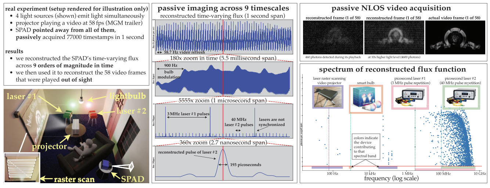
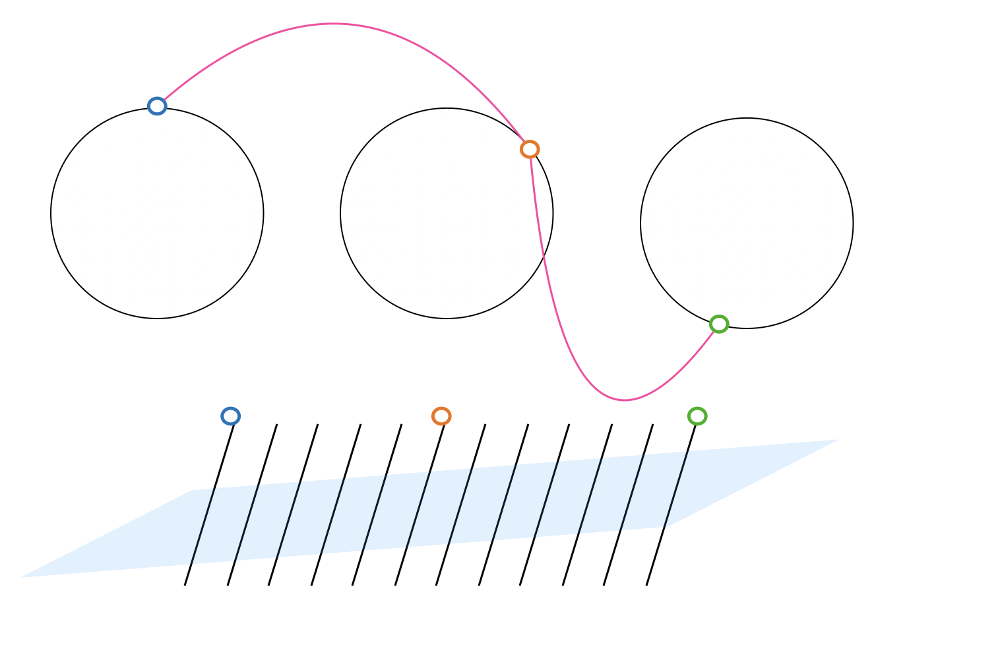
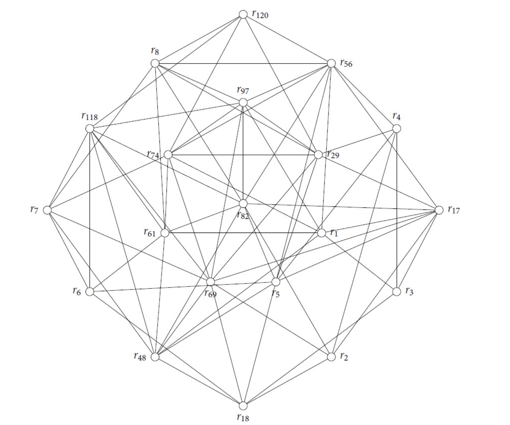

|
Howard Xiao I'm an incoming fourth year undergraduate student at University of Toronto. I am currently working with Toronto Computational Imaging Group (TCIG) under Prof. Kyros Kutulakos and Prof. David Lindell. I'm currently doing research in the area of ultra-wideband single photon imaging. I am also working with Prof. Boris Khesin at University of Toronto and Prof. Anton Izosimov at University of Arizona, in the area of Lie groupoids and Lie algebroids. On a related area of finite Lie Theory, I'm exploring with Prof. Eckhard Meinrenken from University of Toronto. Research Email / School Email / CV / LinkedIn |

|
Some Bio & UpdatesI've spent quite some years of my childhood in Tianjin, China. I love the culture, the food and above all, the tea there. Please see below to check out a recent code release for ICCV 2023's best paper Passive Ultra-wideband Single Photon Imaging! In Fall 2024, I will be TA-ing for MAT240H1: Algebra I at University of Toronto, St. George campus. I joined Dynamics Graphic Project of Toronto Computational Imaging Group (TCIG) since September, 2023. I received the Undergraduate Student Research Awards (USRA) from NSERC Canada for summer 2024. In May, 2024, I completed a full year internship at Bell Canada as a software developer, completeing the university's internship program ASIP. In spring 2024, I was a TA for MAT247H1: Algebra II course at University of Toronto, St. George campus with Prof. Eckhard Meinrenken. From September 2023 to April 2024, I was also working with Prof. Almut Burchard in a project involving Steiner Symmetrizations. |
ResearchBroadly speaking, my current research interest is understanding the geometry of everything around us and of abstract mathematical structures. I believe computational imaging contributes more to the first part, while Lie theory contributes more to the second. How to connect the two? That's an exciting question. I feel the two will and needs to be connected, to model and visualize the existing geometric structures in the world and even abstract geometric structures.In general, I am interested in providing concrete mathematical principles together with cool computational imaging possibilities. ProjectsIn short, I haven't published anything so far. However, there's some work in progress. There are some ongoing imaging projects not listed below too. This will be updated in the near future. |
|

|
Passive Ultra-wideband Code Release (1-dimensional Flux Reconstruction)
August, 2024 Github page / Original paper Code pipeline taking in an increasing stream of photon timestamps captured by unsynchronized single-photon avalanche diode (SPAD), and completes steps of ultra-wideband probing, frequency thresholding and 1-dimensional flux reconstruction for multiple asynchronous periodic sources (unsynchronized picosecond lasers, projectors, etc.) |
|

|
Central Extension of Virasoro Groupoid and Algebroid [In Progress]
Howard Xiao, Unknown, 2025 Compute cocycle of central extensions on Virasoro Groupoid and Virasoro Algebroid, use it to find Poisson structure, and possibly interesting solutions to several equations like KdV. |
|

|
Maximal Tori in Apposition [In Progress]
Howard Xiao, Unknown, 2025 Maximal Tori in Apposition for classical Lie groups. |
Website template from Jonathan T. Barron.